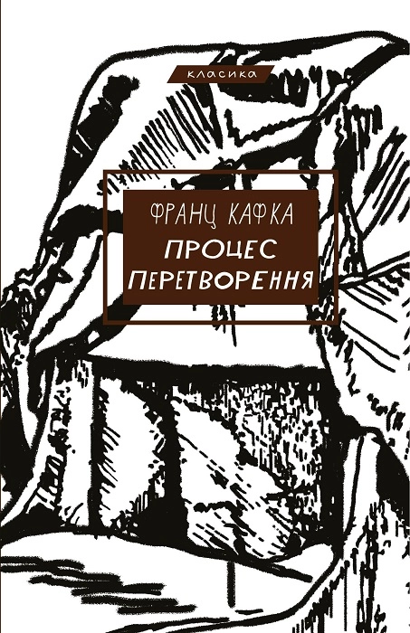
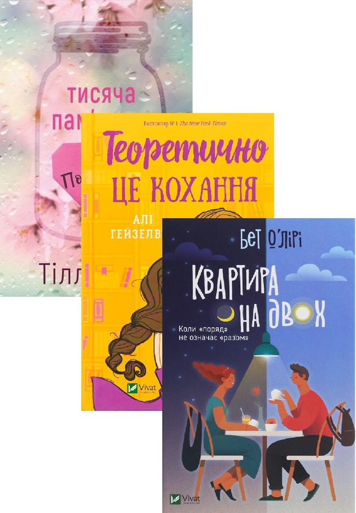

Класична література — це не просто книги з минулого, це тексти, що пройшли випробування часом і залишаються актуальними сьогодні. Вони заклали фундамент сучасної культури та мови. У нашому просторі ми приділяємо особливу увагу творам ХІХ та ХХ століть, адже саме вони допомагають зрозуміти витоки сучасних суспільних процесів та людських взаємин.
Бестселер, який вам варто прочитати: 
Для знайомства з глибинами людського духу ми рекомендуємо звернути увагу на твори Франца Кафки або Джорджа Орвелла.
Це література, яка ставить незручні запитання та змушує мислити критично.
Нижче представлено видання, яке ми вважаємо еталонним для вашої домашньої колекції:
Роман — це найскладніша та найглибша літературна форма, яка дозволяє автору розкрити ціле життя на папері. У нашому просторі ми фокусуємося на психологічних та історичних романах, де кожен персонаж має власну неповторну долю. Ми віримо, що хороша книга здатна змінити світосприйняття читача, відкриваючи нові грані емпатії та розуміння світу.
Бестселер, який вам варто прочитати: 
Якщо ви шукаєте емоційну глибину, зверніть увагу на сучасні романи про пошук себе.
Спеціально для поціновувачів великої прози ми підготували комплект «Золота серія»,
який включає три фундаментальні твори
Наукова фантастика — це не просто розповіді про ракети та роботів, це література ідей. Вона ставить перед людством складні питання про етику технологій, межі пізнання та наше місце у Всесвіті. Наш «Книжковий простір» активно підтримує розвиток футурологічних дискусій через призму кращих Sci-Fi творів.
Бестселер, який вам варто прочитати:
Для першого занурення ми рекомендуємо класичну антиутопію, яка з часом стає лише актуальнішою.
Це твори, що аналізують соціальні структури та свободу особистості.
Детектив — це насамперед виклик інтелекту. Це жанр, який вчить читача помічати деталі, будувати логічні зв'язки та розрізняти істину серед хибних слідів. Від класичного англійського детективу до сучасного трилера — кожна історія тримає в напрузі до останньої сторінки.
Бестселер, який вам варто прочитати:
Обов'язково зверніть увагу на роботи Стівена Кінга, зокрема на його фундаментальний роман «Воно».
Цей твір — не просто історія жахів, а глибоке дослідження дитячих травм, сили дружби та боротьби зі своїми найглибшими страхами.
Його романи майстерно поєднують у собі гостросюжетний детектив та неперевершений психологічний трилер.
Завдяки детальному опису маленького містечка Деррі та живим характерам героїв, це книги, від яких неможливо відірватися до останньої сторінки.
Ми зібрали для вас короткі огляди від наших експертів про те, як змінюються жанри сьогодні: